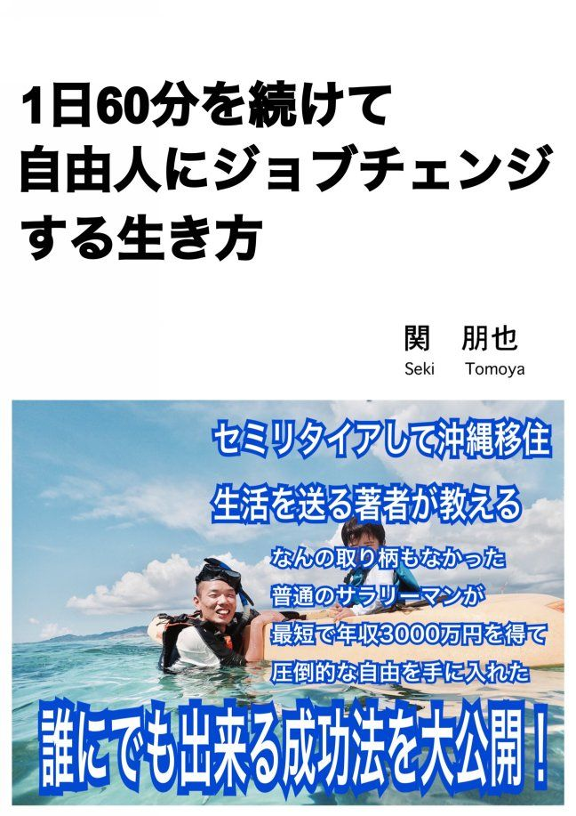

| １日６０分を続けて自由人にジョブチェンジする生き方 | |
| 関 朋也 | |
| (2017) | |

１日６０分を続けて自由人にジョブチェンジする生き方
はじめに
第１章 最短でお金を稼ぎ自由を手に入れるまでの道順
・どん底クビ会社員が月収１００万円稼いで無敵になるまで
・毎月少ない労働でお金が入ってきたら
・資格オタクが決して成功できない理由
・ルフィとナルトに共通するある成功法則とは？
第２章 金なし、コネなし、時間なしでも稼げるようになれる
・金なし、コネなし、時間なしでも稼げる職業とは？
・サラリーマンでも主婦でも副業で安定して３０万円稼ぐ方法
・都会の一流エリートと田舎のフリーターではどっちが稼げる？
第３章 人から感謝されながら稼ぐ方法
・情報の価値っていくらくらいなの？
・２１世紀に生きてる我々は無料で広告ができる
・どんな商品を販売すればよいのか？
第４章 あなたの人生が変わらない生活習慣
・ボクには友達がいないから結果が出ました
・３つのＮＧワードを使わなくなると人生が好転する
・ビジネス書が売れても稼げる人が増えない理由
第５章 あなたが今日からすること
・あなたでも売れる商品を作ろう
・いますぐインターネットで１万円稼ごう
・１万円稼げたら１０万円稼げ、その延長上に月収１００万円がある
おわりに
はじめに
はじめまして、関朋也と申します。
この本では、あなたが毎日１日６０分程度の努力を続けていただければ、自分でお金を稼ぐ力が身につき、最短で自由人にジョブチェンジできる鉄則を書き記しました。よくある、「感謝すれば」、「思いを強く持てば」等の抽象的な表現は書いていません。本書を読んでいただければ、初心者の方でも月収３０万円程度を安定して稼ぐことができる方法を書いています。月収３０万円までいければ、月収１００万円も夢ではなく、現実的な目標にできますので、慌てず読み進めていってください。
また本書をダウンロードいていただいた方には、特典として副業をはじめるための動画マニュアル「Side Buisiness Standard」も無料でプレゼントさせていただきます。本書に書ききれなかったことを動画で解説していますので、合わせてご覧ください。受け取り方法などはメールマガジン等をご確認いただけますと幸いです。それでは、月収３０万円の門を開いていきましょう。
第１章 最短でお金を稼ぎ自由を手に入れるまでの道順
・どん底クビ会社員が月収１００万円稼いで無敵になるまで
今から約６年前、結婚を考えていた彼女と海外旅行をしていたボクに突如事件は起こりました。帰国翌日、ダルイ感情を抑えて出社したボクは、全社員と共に会社のホールに集められました。この時の社長の最初の一声は今でも忘れられません。「みなさんには、辞めていただかなければなりません」「？？？」ボクを含め、社員全員が事態を飲み込めていませんでした。当時はリーマンショックの後と言うこともあり、超円高不況の真っ只中、会社が倒産したんです。
その後、独立を夢見て起業するも、騙されたり、やることが裏目に出たりで気が付いたら借金は１０００万円にもなり、その間にも結婚、妻の妊娠と人生のイベントが重なり、もうすぐ子供が生まれるって状況になりながらも、ボクは無職、無収入になっていました。はっきり言って、その月の家賃どころか電気代の支払いでさえ心配しているような生活を送っていました。「このままではマズイ」と就活に走る毎日。なんとか職につくことができて生活を持ち直すことができました。ただ、雇われて仕事をがんばればがんばるほど、心が貧しくなっていく感覚に見舞われ、モヤモヤの取れない毎日を過ごしていました。
もう一度、独立して自由に生きられる方法はないだろうか？こんなつまらない毎日ではなく、おもいっきり人生を楽しみたい。ネットで副業探しを毎日することになります。探すこと１年半、運命の出会いを果たすことになります。
運命の出会いで出会った師匠からは、インターネットビジネスのいろはを教わり、ここからの快進撃がはじまります。教わったことを忠実に再現させ、インターネットビジネスをはじめたその月から副業収入２０万円、そのままトントン拍子で半年経たない内に、副業収入は月１００万円を超えるに至りました。その後も会社員の限界に挑戦しようと思い、会社勤めをしながら、家族との時間を大切にしながらも、副業月収４００万円を超えるまでになりました。ここで会社員はギブアップし、家族と共に沖縄に移住し、その半年後には月収１０００万円を超えてしまっていました。はじめたとき、会社の給料＋２０万円稼げたら良いなって思ってはじめたものがこんなことになるとは思ってもおらず、今までの不遇な人生はなんだったんだろうって笑ってしまえるくらい、過去も良い思い出として思えるようになりました。
会社員をしながら副業で成功。誰もがうらやむシンデレラストーリーの様に感じるかもしれませんが、これはあなたにも起こる現実かもしれません。実は、成功するには法則があるんです。成功法則に触れる前にボクの日常や友人達について少しお話していきたいと思います。
・毎月少ない労働でお金が入ってきたら
月収１０００万円と書きましたが、毎日会社員よりも忙しく働いているんじゃないかと思われるかもしれません。しかし、実のところを言うとほとんど働いていません。１日６０分程度か、週の半分はまったく働いていません。この本を執筆している最中も、友人達と石垣島でマリンスポーツやバイク旅を楽しみ、息子と毎日ビーチに行ったり、昼間からビールを飲んでいたりしてます。それでも収入が発生する仕組みを構築して、沖縄の海を満喫していてもボクの口座にはお金が入ってきます。ボクの友人には、一流企業に勤め、年収１０００万円ほど稼ぐ人もいますが、休日もほとんどなく、残業も毎日深夜までということが多く、１年の内でゆっくりできるのは正月だけだそうです。会社員は、自分の時間の対価として給料をもらっていますので、時間的な自由を得ることはできませんし、ここまでの思いをしてようやく１０００万円という収入を得ることができるんです。
しかし、ボクはお金が入ってくる仕組みを構築しているので、毎日ゴロゴロしてたり、海外に行ったり好きにすることができ、会社員を辞めてから目覚まし時計を使うこともなくなりましたし、外食も値段を見ないで好きなものを食べています。
そして同じ様に稼ぐ仲間を増やし、「今セブ島にいるんだけど遊び来ない？」って誘われたらすぐに飛行機を取って遊びに行ったり、「今度イタリアに本場のピザを食べに行きませんか？」って誘われれば、即答で回答してミラノやフィレンツェの絶景を見ながら本場のピザとワインを楽しんだりしました。ヨーロッパはちょっと遠かったですが、アジアであればコンビニ感覚で出かけて行ってしまいます。更に、今度は家族と香港のディズニーランドや、キャンピングカーを借りて１ヶ月間北海道に行く予定を立てています。同じ様に稼いで、ぶっ飛んだ遊びを仲間とすることも最高ですし、家族と好きな時に好きな場所に遊びに行けることは本当に幸せを感じます。なので、ボクは同じ様に稼いで自由な時間を楽しめる仲間を増やしていくために、本を執筆したりして情報を伝えています。それでは、次からボクがなぜこのような生活を手にすることができたのかをお伝えしていきます。
・資格オタクが決して成功できない理由
あなたは国家資格などはどれくらいお持ちでしょうか？ボクは自慢ではありませんが、運転免許証しか持っていません。これだけ海外に行っていても、 ＴＯＥＩＣのスコアは３００点くらいです。なぜボクが資格を取ることにこだわらないかと言うと、資格はひとつのビジネスモデルになっていて、次から次へと資格を取らせて、お金と時間を使わせるように仕向けていることを知っているからです。こういう言い方は失礼かもしれませんが、資格をたくさん持っている人で、ボクより所得が高い人を見たことがありません。資格というのは、大抵の場合１つでは仕事が成り立たないようにできていて、１つの資格でも◯◯資格の３級を取得すると、次は２級、１級とランクアップが必要になります。その為に必要なことは、参考書代、資格によっては学校に通わなければならないものもありますし、塾代、実技講習代、試験代などがかかります。そして、取得するための勉強には膨大な時間を要します。これが次から次へと永遠にループされ、これだけ苦労をしてもあなたの収入にまったくつながらない（仕事にはつながるかもしれませんが）のです。
資格を取得したにも関わらず、給料は上がらず、ずっとお金と時間だけが吸い上げられていくのです。つまり、あなたがお金を稼ぐために必要な、肝心なことを教えないようされているのです。
もう一度言います。
あなたがお金を稼ぐために必要な、肝心なことを教えないようされているのです。
これは現実のビジネスの世界でも起きていることです。高額のコンサル料を取っておき肝心なことは一切教えず、教え子から次から次へとお金を請求するのです。なぜ、巷の高額のコンサル料を取る自称先生が肝心なことを教えないかと言うと、肝心なことを教えて結果を出してしまうと、教え子が自分の元から離れてしまって、お金を取ることができなくなってしまうからです。そして結果が出ない理由を自己責任だと主張し教え子の責任にして、自称先生は責任逃れをし、次から次へとお金を搾取するのです。もし、あなたが副業などに挑戦して結果が出ていないようでしたら安心してください。あなたの責任ではなく、本当に稼げるノウハウを公開しない、自称先生の責任なのです。次は、人気マンガの主人公から学ぶ成功法則をお伝えしていきます。
・ルフィとナルトに共通するある成功法則とは？
結論からいうと、彼らの成功法則は一流の指導者に教えを受けていることです。
彼らは一流の指導者に学びに行ったおかげで、ルフィはレイリーを師事し覇王色の覇気を使えるようになり、ナルトは_自来也を師事することに忍術などの強さだけでなく、人としても大きくなることができました。この一流の指導者に教えを受けたからこそ、強くなり、人間としても成長し結果を出すことができました。ルフィ、ナルトのそれぞれの指導者も必死に指導します。それはなぜか？結果が出なければ指導者として失格の烙印を押されてクビになってしまうからです。マンガが例えになってましたが、プロ野球やプロサッカーなどスポーツの世界でも結果が出ない監督はクビになりますよね？指導者として実績は結果のみで判断されます。この結果が出ない期間が続くと指導者として失格の烙印を押され、指導者として声がかからなくなり死活問題になってしまうのです。なので、一流指導者も必死に教えます。
ボクは中小企業の社長さんや個人経営のお店などにもコンサルさせて頂いておりますが、結果が出ないことを自己責任とか巷の自称コンサルタントと同じ様に責任逃れをすることを許されません。法人ですから売り上げという結果のみで判断されます。なので、ボクも必死に指導して結果を出してきました。でなければ、お払い箱になり、この本を執筆することもなかったと思います（笑）
なので、結果を出したい場合は、一流の指導者に教えてもらうことが重要です。一流を見極める上で重要なことは、教え子が結果が出ているか、結果が出る具体的なノウハウがあるのか、特にインターネットビジネスは一発屋が多いので、少なくとも２、３年は指導実績があるかで判断してください。この点を踏まえれば巷の自称コンサルタントにお金を搾取されることもないでしょう。
第２章 金なし、コネなし、時間なしでも稼げるようになれる
・金なし、コネなし、時間なしでも稼げる職業とは？
ここからは、ボクの現在稼いでいるビジネスを具体的に書いていき、最速で月収３０万円以上安定し、１００万円を超える稼ぐ方法をお伝えしていきます。
まず月収１００万円以上稼げる職業を考えてみましょう。パッと浮かぶところでは、医者、弁護士、パイロット、プロスポーツ選手とかでしょうか？しかし、これには問題があります。一流大学に入学し、何年も勉強や実習を重ね、さらに難関の国家資格に合格する必要があります。プロスポーツ選手も生まれ持った身体能力や幼い頃からそのスポーツをやり続けているなど万人には向いていません。次に考えられるのは会社員ですが、大手企業の管理職になると思いますが、これらの大手に入るには学歴が必要ですが、管理職になるまでにものすごい苦痛に耐えながら何年も会社のために努力する必要があります。どの職業にせよ、自分の時間を会社などに提供してお金を稼いでいます。友人に大手の会社員や資格独立業者などいますが、残業や休日出勤でとても大変そうです。
不動産や株などの投資家は比較的時間に余裕があるように思えますが、資金と相場などを読みぬくために努力する必要があります。
では、ボクが普通の会社員から、金なし、コネなし、時間なしで、会社に勤めながら半年で毎月１００万円以上稼いだ秘密を公開していきます。ちなみに、ボクの学歴は三流でして、大卒ではありませんのでご安心ください（笑）
・サラリーマンでも主婦でも副業で安定して３０万円稼ぐ方法
ボクの友人に、専業主婦をしながら毎月安定している方がいます。恐らく、毎月１００万円前後稼がれていると思います。では、具体的にどのように稼ぐかというと、彼女の経験や知識をインターネットで公開して、それを人に教えてお金を頂いています。しかも、この仕組みを半自動化していて、１日の労働時間は１時間程度だそうです。では、どのように始めるかと言いますと、無料で情報を提供してしまうのです。「えっ？無料じゃ稼げないですよね！？」とあなたの声が聞こえてきそうです（笑）落ち着いてください、稼ぐ方法を順序立ててご説明していきます。
専業主婦の彼女も、ボクも、読者のあなたも様々な経験をして、様々な情報を持っています。例えばボクはよく海外旅行に行きますし、沖縄に住んでいるのでどこに行くにも飛行機が必須になります。この飛行機に無料で乗れる情報を持っていたりします。世界一周ですらファーストクラスやビジネスクラスで無料で行けますし、ホテルの宿泊も恐ろしい値段で泊まれたり、色々なポイントがザクザク溜まって使い切れないほどになる方法など知っています。さらに、「１時間で３万円のお小遣いを稼げる方法」などを無料で提供すれば、知りたいと思う人が増えるでしょう。このような情報はボクが元々知っていた情報なので、仕入れるのにお金はかかりません。なので、例えば今全く資金がなかったとしても収入を作る出す仕組みを構築することができます。
では、どのように構築していくかというと、提供する情報をインターネット上で公開します。あなたもアマゾンや楽天などで買い物をしたことがあると思います。デパートのように、店員がいなくても、自動で商品が売れていきます。
これと同じように、自動で売れるようにするには、情報をＰＤＦや動画にしてインターネット上で公開します。これには、ドメインとサーバーを契約するだけで情報公開できます。この費用も、月１０００円程度です。しかも情報を仕入れるのは自分の知識で無料ですから、資金がなくても始めることができます。
よく世間ではギブ＆テイクと言います。要するに与える変わりに見返りを求めるのです。しかし、これではお金持ちになれません。お金持ちになりたければ与えて与えて与え続け、見返りは一切求めてはいけません。お金を稼ぐというと、相手からお金を「奪う」というイメージですが、それは違います。相手にとにかく「与える」のです。これはお金持ちの中では原理原則のようなもので、これができないと稼ぐことができません。
あなたは特別な存在です。だからこの世に生まれてきています。そして、ご自身が持っている経験や知識を情報として世の中にあなたの存在を認めてもらってください。そして、その情報を提供し、感謝され、その対価としてお金をもらってください。この原則が分かれば、いくらでもお金は入ってきます。
・都会の一流エリートと田舎のフリーターではどっちが稼げる？
これも結論から言うと、ボクの過去のデータを見返してフリーターの方が稼げます。
またボクの友人の話ですが、彼は出会った時フリーターでした。その時は本当にお金がなかったそうですが、今では毎月１００万円以上稼いでいます。彼は、何も失うものが無いから、どんな人からも学ぼうという姿勢で話を聞いています。では、一流のエリートはどうかというと、ボクがなにかを教えても一流大学を卒業している、一流企業に勤めているというプライドがあるので、三流学歴で毎日家でゴロゴロしているようなボクの言うことは中々聞いてくれません。なので、一流で生きてきた人は結果が出ないのです。これは例えであって、一流だから結果が出ない訳ではありません。ボクが言いたいのは、「素直」ということが結果を出すうえでいかに大事かということが言いたいのです。例えば、長年の経験から稼ぐためのノウハウをボクが１から５まで順序立てて伝えたとします。「素直」な人は１から５までちゃんと行動するので稼げる結果が出ます。しかし、「素直」に行動しないで、ノウハウ１から３だけ行動して、４と５は「自分に合わないから」という理由で行動しなかったら、結果はでません。ボクが長年の経験から結果が出るノウハウを体系的にお伝えしたとしても、あなたが、ボクが三流学歴だから、年下だからというプライドで「素直」に話を聞かずに行動しないと結果はでないのです。プライドは捨て、「素直」になることが結果を出すためには重要なのです。
第３章 人から感謝されながら稼ぐ方法
・情報の価値っていくらくらいなの？
第２章では、インターネット上に自動でお金を稼ぐ仕組みを構築し、まずは情報を無料で提供しようとお伝えしました。そして無料の状態からお金が発生する具体的な方法をお伝えしていきます。
まず、最初に問題になるのが情報をいくらの値段で売れば良いかですが、ここで一番やってしまいがちなのが、安価な値段で売ることです。情報を１万円で販売した場合は、３０人に販売しないと売り上げは３０万円になりません。情報を１０万円で販売すれば、３人に販売するだけで３０万円の売り上げになります。３０人に販売するより、３人に販売する方が、集客に力を入れなくて良いので楽に３０万円の売り上げをあげることができます。１０万円の商品を販売するとなると、商品力に力を入れなくてはいけません１０万円の商品がＰＤＦ１枚でしたらクレームの嵐です。３０人集客するのは大変ですが、この商品力を身につけるのは集客するより遥かに容易です。一番簡単なのは、他人の１０万円の商品を販売することです。アフィリエイトという言葉を聞いたことがあると思います。これは、他人の商品を代理で販売することで、あなたが代理店になることです。商品を用意しなくても、様々な商品を販売することができるようになり、アフィリエイトという方法がインターネット上で用意されています。５０万円の商品を販売して、３０万円の紹介手数料がもらえたりします。あなたが自分で商品を用意して５０万円で販売すれば、売り上げはすべてあなたのものになります。
・２１世紀に生きてる我々は無料で広告ができる
商品を販売するには購入見込みのありそうな人を集めなければいけません。集客というと難しい印象があります。飲食店のように、呼び込みやビラ配りが必要かというと、情報販売ビジネスでは必要ありありません。日本を含め先進国では、安価な値段でインターネット契約ができ、日本はどこでもインターネットに繋がります。何を使って集客するかというと、ＳＮＳです。通信インフラが整っているので、Ｆａｃｅｂｏｏｋ、Ｔｗｉｔｔｅｒ、ＬＩＮＥなどほとんどの人が使っています。３０万円売り上げるには、１０万円の商品を３人に販売する必要があります。これには、少なくとも３０人は集客したいところです。これはＳＮＳを使えば簡単です。まずあなたは無料で情報を提供します。そうすればあなたの信頼が上がり、口コミが発生し、３０人程度集めるのであればさほど難しいことではありません。
・どんな商品を販売すればよいのか？
どんな商品を販売すれば良いかというと、「お金」「コミュニケーション」「健康」「スピリチュアル」に関することです。これらは４大キャッシュカテゴリーと言われどんな時代であっても普遍的に売りやすい商品になります。お金を稼ぐというのは、いつの時代もついてまわる悩みであり、コミュニケーションに関しては、人間関係、出会い、恋愛、家族とほとんどの人がここにまつわる悩みを持っています。健康は人間の生存欲求の根本ですし、ダイエットや美容に関することも、コンプレックス産業と言われ多種多様の広告やサービスを目にすると思います。スピリチュアルに関しては、占いやちょっと前に流行った引き寄せの法則など目に見えない心のサービスです。
これらは人間の本質に関わることなので、解決できる情報に関しては高く売れます。３０万円どころか、５０万円、１００万円以上なんてこともざらです。結婚相談所や美容エステなどはいい例ですね。高収入な人と結婚できる、美人ばかり集まっているなんて結婚相談所は年額１００万円を超えますし、エステ等の美容に関するサービスも１００万円単位のものが多数存在します。
もちろんこれらの商品を自分で用意する必要もありません。これらの商品をアフィリエイトして代理で販売すれば良いのです。人の悩みを解決して対価としてお金をいただくのですから、感謝されながらお金を稼ぐことができます。
第４章 あなたの人生が変わらない生活習慣
・ボクには友達がいないから結果が出ました
ここまでは稼ぐために具体的な方法を伝えてきましたが、これからお伝えすることができていないとお金を稼ぐことができません。多くの人に陥りがちなお金と自由が逃げていく習慣をお伝えします。ぜひ覚えておいてください。
どうすればあなたがお金持ちになれるかというと、付き合う友達を変える必要があります。ボクは地元の友達とはまったく会っていませんし、会社員時代の同僚とも会っていません。なんでそうしているかというと、年収１０億円以上稼ぐお金持ちに「関さん、よく会う友人の５人の平均年収が将来の関さんの年収になるんですよ」と言われました。なので、当時の友人とは一切会うことはやめて、セミナーに積極的に出かけて親睦会でお金を持っている成功者と積極的に話しました。
そういうお金持ちと話していると、「今年は年収１０億超えそうで忙しいから、ちょっと手伝ってよ」とか、「月１０００万円稼ぐのなんて当たり前でしょ。なにかわからないことあったら聞いてね」なんて言われます。しかし、収入を増やしたいと思っているのに、年収２００、３００万円の人と会っていると、「ネットビジネス？怪しいな。。。」「独立？そんなの無理でしょ」と言われてしまい足を引っ張られてしまいます。その結果どうなるか、現状維持の人生が待っています。あなたもボクと食事や飲みに毎日出歩いていたら、月収１００万円は間違いなく稼げるようになります。最速でお金持ちになる極意は、すべての環境、友達と縁を切り、新しい環境に変えてみることです。ボクみたいに極端に友達と会わなくなるのは難しいかもしれませんが、あなたも会う友達をすこしずつ変えていけばいいのです。ボクの携帯のＬＩＮＥを見ると、クライアントさんと年収数千万以上のお金持ちのみです。年収数千万円稼いでいる人と話していると、そこで聞いたふとした一言を実行するだけで、すぐに数百万円_とか儲かってしまうこともあります。現在、貧富の差が広がっているのは、この環境の差です。会話と出回っている情報が違うので、お金持ちは益々お金持ちになります。しかし、年収２００、３００万円の人と一緒にいると現状維持なのです。あなたも何かの縁でボクと繋がったのですから、環境の変化を起こしています。月収３０万円、１００万円稼ぐ未来への変化していっています。
・３つのＮＧワードを使わなくなると人生が好転する
日常に使うことを辞める３つのＮＧワードとは、「でも、」「だって、」「しかし、」です。ここまで成功するためのノウハウを述べてきましたが、あなたは「でも、」「だって、」「しかし、」という言葉はここまで浮かんできましたか？もしまったく浮かんで来なかったのなら、この章は飛ばして次の章を読んでください。もし１回でも「「でも、」「だって、」「しかし、」と浮かんで来たのならこの章は熟読してください。ボクが起業して失敗した話をちょっと前に書きましたけど、当時会社をクビになり、独立を夢見て起業して大失敗の末１０００万円もの借金ができて無職、無収入と言わば負け組に転落しました。そこから出会いがきっかけで経済的な成功を勝ち取ることができました。その時決めたことは「でも、」「だって、」「しかし、」この３つのＮＧワードを使わないことでした。そして、言われたことは素直にすべて実行しました。これが出来たからこそ、会社勤めをしながらたった半年で月収１００万円を超えられるようになったのです。ボクも嬉しいことに、多くの方に稼ぎ方を指導させていただく立場になりました。今では、稼げるか稼げないかは、言動を見ていればわかるようになりました。過去の言動と行動の繰り返しで、今のあなたがあります。アドバイスを受けた時、「でも、」「だって、」「しかし、」と心に浮かんだ時、それは成長のチャンスです。なぜそのような言葉が出てくるのか？それは過去に経験がないことなので、ストレスになります。人間は心理学でいう恒常性というものが働きます。これは簡単にいうと、人間は本能的に現状維持を好みます。「でも、」「だって、」「しかし、」と出た時は、恒常性により本能が受け入れ難いので心が拒否反応を起こしているのです。この時に「でも、」「だって、」「しかし、」と言わずに、素直にアドバイスを実行すると成長することができます。今までのあなたは心理学でいう恒常性によるものなので、あなたはまったく悪くありませんし、無限の可能性を秘めています。さぁ、「でも、」「だって、」「しかし、」と心に浮かんだ瞬間が成長のチャンスです。
・ビジネス書が売れても稼げる人が増えない理由
もしかしたらあなたも読んだことがあるかもしれませんが、数年前に流行った「もし高校野球の女子マネージャーがドラッカーの『マネジメント』を読んだら」や「夢をかなえるゾウ」など、書店には数え切れないほどのビジネス書が並んでいます。どちらもベストセラーで映画化やＴＶドラマ化しているヒット作です。これだけ成功法則書は売れていますが、あなたの周りにこれらを読んで稼いだという人がいるでしょうか？稼げない理由は明確です。本はだいたい１０００円ちょっとという安価で売られているので、本の内容に価値を感じないから誰も実行しません。本に書かれていることを忠実に実行すれば、お金を手にすることができるのです。ボクの本も同様です。無料もしくは安価で入手することができます。なので、あなたは価値を感じることなく本書の内容を実行しない可能性があります。実行しないとなんの変化も起きません。
本書はボクがクビ会社員から月収１０００万円稼ぐまでを書いたもので、本の内容を実行すれば月収３０万円くらい普通の大人であれば稼ぐことができます。また、ボクが主宰しているコミュニティーメンバーも、本書の内容を実行して月収３０万円、または１００万円以上稼いでいます。なので、どの章からでも構いませんので今から実行に移していきましょう。稼ぐ意気込みを紙に書き出し、ボクにメールするでも構いません。それでは、次の章ではあなたが稼ぐために今すぐ実行に移した方が良いことをお伝えしていきます。
第５章 あなたが今日からすること
・あなたでも売れる商品を作ろう
はじめに、今までお伝えした通り、販売する商品を作り必要があります。 この章では、販売する商品の作成の仕方をお伝えしますので、素直に実践していただくと月収３０万円は稼げる商品を作成することができます。
まず、アフィリエイトに関してのおさらいです。アフィリエイトとは他人の商品をあなたが紹介して販売することです。その商品が売れると、商品の余裕者から、代わりに販売していただいてありがとうございますと販売手数料をもらえます。あなたが、１０００円の青汁を紹介して友人が購入したとします。紹介手数料が３０％だったら、１０００円の３０％の３００円があなたの紹介手数料として支払われます。
ボクもこのアフィリエイトから始めて、月収２０万円、１００万円、１０００万円とステップアップしていきました。
・いますぐインターネットを使ってで１万円稼ごう
アフィリエイトの仕組みをご理解いただいたので、さっそく１万円を稼いでみましょう。
あなたがビジネス初心者でも９９％の確率で、アフィリエイトで１万円稼ぐことができます。スマホかパソコンがお近くにあるなら、一緒に手を動かしていきましょう。まず、スマホかパソコンで「ハピタス」と検索してください。ハピタスとは、スマホさえあれば、アフィリエイトで稼げるサイトです。あなたが楽天やアマゾンで買い物をしたとします。その際、ハピタスを通して買い物をすると、購入金額の１％があなたに支払われます。多い物では、買い物金額の全額返ってくるものもあります。この自分で購入してお金が返ってくるのは、自己アフィリエイトというものになります。それに加え、あなたがクレジットカードを作成するだけで１万円、保険の見積もり相談を受けるだけで１万５０００円ほどもらえたりもします。
おそらく、後でやろう明日やろうと思うと、いつまでも行動しないので、いますぐ実践して１万円稼ぎましょう。
・１万円稼げたら１０万円稼げ、その延長上に月収１００万円がある
先ほど、ハピタスを紹介しましたが、他にも同じようなサービスはたくさんあります。このハピタスは登録が非常に簡単で３分もあれば登録完了できます。更にすごいところは、友人をハピタスに紹介すると、友人が稼いだポイントのうち、紹介人数によって変動しますが１０～４０％があなたのポイントになるのです。紹介した友人が１０万円分のポイントを稼げば、あなたは少なくとも１万円はもらえるのです。
さて、ハピタスを実践していただければ分かるのですが、数万円程度は簡単に稼げてしまいます。３時間もあれば１０万円稼ぐことも可能です。そして、その次に、この１０万円稼ぐ方法を人に教えてあげるのです。確実に１０万円稼ぐ方法を教えるから５万くださいと言えば、ほとんどの人は支払うと思います。だって、１０万ー５万＝＋５万ですよね？特することがわかっていたら、お互いハッピーではないでしょうか。
教える方法ですが、これはとても簡単で、あなたがハピタスで稼いだ方法をそのまま教えれば良いのです。このハピタスで稼ぐ方法を人に教えて、毎月１００万円稼ぐ人がボクの友人にいます。
文章でわかりづらかったかもしれませんが、ハピタスで稼ぐ方法を動画でも紹介していますので、まずは最初の一歩を踏み出してみましょう。
おわりに
この本を書こうとしたきっかけですが、ありがたいことにボクには毎日たくさんの方からメルマガに登録していただいております。そして、ボクは一人一人に、「あなたの夢はなんですか？」とお聞きしています。その大半の回答は、親孝行したい、家族に○○してあげたいと言った、ご自身の大切な人の為にもっとお金を使いたい、自由に使える時間が欲しいというものでした。ボク自身、インターネットを使ったビジネスの業界に足を踏み入れた理由は、お金がまったくなく、結婚式どころか、指輪すら買ってあげられなかったのに結婚してくれた妻に、結婚式をプレゼントしてあげたいという気持ちからでした。仮にお金がない人生だったとしても、一生に一度の結婚という一大イベントをささやかでいいからしてあげたい。切実に思ってました。
ボクは、会社員やアルバイトをしている人など、どんな働き方をしていようが、それで幸せなら否定はしません。しかしあなたにも幸せにしたい人はいると思います。お金を持つことがすべてではありませんが、お金を理由に諦めることほど、寂しいことはないのではないでしょうか？
だから、もしあなたが現在の働き方をしていて、それが幸せだと思えないのなら、少しでも疑問を抱いているのであれば、少しだけレールから外れた働き方を覗き見してみてはいかがでしょうか？１日６０分、毎日たったこれだけの時間をあなたとあなたの大切な人たちの未来の為に使ってみてはいかがでしょうか。一歩を踏み出す勇気を持つことにより、素晴らしい人生が待っているかもしれません。
最後までお読みいただき、誠にありがとうございました。本書を通して、今が幸せであっても、そうでなかったとしても、今後のあなたの人生がより良いものに発展していくことを心より願っております。
関 朋也